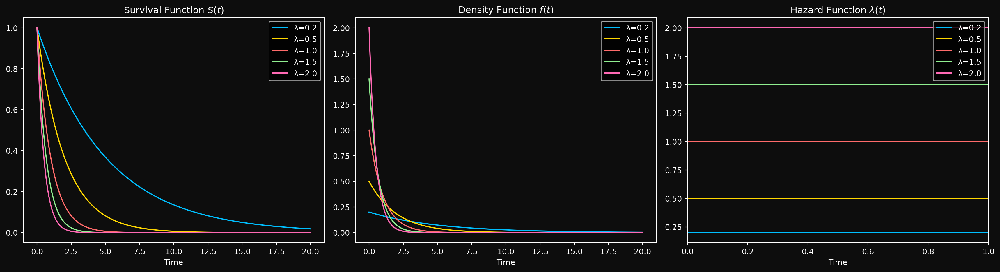

Recap of Part 1
In the first part of this series, we established why survival analysis exists as a separate field- regression breaks, censoring is real and the functions we care about for survival analysis are fundamentally different from conditional expectations. Using basic calculus and probability theory, we introduced the key actors in survival analysis- the survival function, the hazard function and the cumulative hazard function. We showed that if you know one of these, you know all of them. In Part 2, we ask a natural follow up question- what does a survival distribution look like? The answer entirely depends on the shape of \(\lambda(t)\), the hazard function. We will see how different shapes of the hazard function lead to different survival curves and what that means in real life. A constant hazard leads to something familiar from undergrad probability. A linearly increasing hazard leads somewhere surprising. And a two parameter family called Weibull quietly unifies both of these and more. We will also understand the bathtub curve, a common shape for the hazard function in real life. Finally, we will see how to fit these distributions to data and use them for prediction.
Distributions in Survival Analysis
Constant Hazard: The Exponential Distribution
What happens if the hazard function is constant over time? That is, \(\lambda(t) = \lambda\) for all \(t\)? From the interpretation of the hazard function, this means for any time interval \(delta_t\), the probability of failure in that interval is the same regardless of how long the object has survived so far. That is, for any time intervals\([t_1, t_1 + \Delta t]\) and \([t_2, t_2 + \Delta t]\), we have the same probability of failure (conditional on survival up to \(t_1\) and \(t_2\) respectively). This is a strong assumption, but it leads to a very simple distribution. Let’s derive it.
We know that \(\lambda(t) = \lambda\) is constant, so we can write the cumulative hazard function as \(\Lambda(t) = \int_0^t \lambda(s) ds = \lambda t\). Using the relationship between the survival function and the cumulative hazard function, we have \(S(t) = e^{-\Lambda(t)} = e^{-\lambda t}\). The Cumulative distribution function (CDF) is then \(F(t) = 1 - S(t) = 1 - e^{-\lambda t}\). The probability density function (PDF) is the derivative of the CDF, which gives us \(f(t) = \lambda e^{-\lambda t}\). This distribution is known as the Exponential distribution with rate parameter \(\lambda\) - one of the most important continuous distributions in probability theory (probably after the normal distribution). The rate parameter \(\lambda\) is in fact the rate of failure per unit time. If you didn’t understand why the parameter lambda is called the rate parameter in your previous courses, you should now. We write \(T \sim \text{Exponential}(\lambda)\) to denote that the random variable \(T\) follows an Exponential distribution with rate parameter \(\lambda\).
Once we have a distribution, the next natural quantities to compute are the moments of the distribution. It is a simple exercise in integration to show that the mean \(E[T]\) of the exponential distribution is \(1/\lambda\) and the variance \(\text{Var}[T]\) is \(1/\lambda^2\). Other quantities related to the moments are the median and the mode. The median is the time \(t\) such that \(F(t) = 0.5\), which gives us the half-life (the time at which 50% of the systems have failed) \(t_{1/2} = \ln(2)/\lambda\). Notice that the half-life is inversely proportional to the rate parameter, which is quite intuitive given the physical interpretation of \(\lambda\). The mode is the time at which the PDF is maximized, which for the exponential distribution is at \(t=0\). The distribution is right skewed- most systems fail early, but there is a long tail of systems that survive for a long time. Here is how the Exponential distribution looks like for different values of \(\lambda\).
An important property of the exponential distribution is that it is memoryless. What does that mean?
Suppose the system has already survived for time \(t_0\). What is the probability that it will survive for an additional time \(t\)? Let’s compute this probability. We want \(P(T > t_0 + t | T > t_0)\). Using the definition of conditional probability, we have: \[P(T > t_0 + t \mid T > t_0) = \frac{P(\{T > t_0 + t\} \cap \{T > t_0\})}{P(T > t_0)}\]
Since \(\{T > t_0 + t\} \subseteq \{T > t_0\}\) (because if the system survives for \(t_0 + t\), it must have survived for \(t_0\)), we can simplify this to:
\[P(T > t_0 + t \mid T > t_0) = \frac{P(T > t_0 + t)}{P(T > t_0)}\]
Substituting the survival function for the Exponential distribution, we get:
\[P(T > t_0 + t \mid T > t_0) = \frac{e^{-\lambda(t_0 + t)}}{e^{-\lambda t_0}} = e^{-\lambda t} = P(T > t)\]
What does this mean? It means that the probability of surviving for an additional time \(t\) does not depend on how long the system has already survived. In other words, the system has no memory of its past survival time. This is a unique property of the exponential distribution and is not shared by any other continuous distribution. In fact, the only memoryless continuous distribution is exponential.
Let’s look at a simple example to illustrate this. Suppose we have a light bulb that has an Exponential lifetime with a rate of \(\lambda = 0.1\) failures per hour. The mean lifetime of the light bulb is \(1/\lambda = 10\) hours. If the light bulb has already been on for 5 hours, what is the probability that it will last for another 5 hours? Using the memoryless property, we can compute this as:
\[P(T > 10 | T > 5) = P(T > 5) = e^{-0.1 \cdot 5} = e^{-0.5} \approx 0.6065\]
This means that even though the light bulb has already lasted for 5 hours, it still has a 60.65% chance of lasting for another 5 hours. Taking this further, if the light bulb has already lasted for 1000 hours, the probability that it will last for another 5 hours is still 60.65%. This is a direct consequence of the memoryless property of the exponential distribution.
This is clearly unrealistic for most real-world systems. For example, if a machine has been running for 10 years, it is likely to be more prone to failure than a brand new machine. But it makes the exponential distribution a useful starting point for understanding survival analysis and serves as a building block for more complex distributions. When your data looks like it has a constant hazard, the exponential distribution is a good first choice for modeling it.
Next, we will look at what happens when the hazard function is not constant, but instead increases linearly with time. This leads us to the Rayleigh distribution, which has some surprising properties.